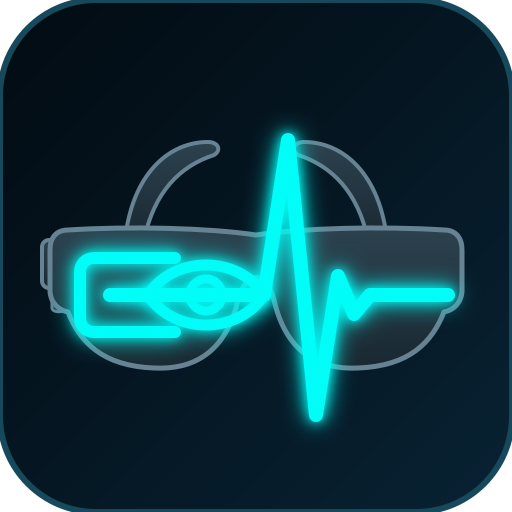

ATENÇÃO MOTORISTA: Queda de cabeça por mais de 3,5 segundos detectada! Encoste em local seguro para descansar e tomar um café.
Postura correta e olhar voltado à rodovia. Mantenha a atenção constante na pista.